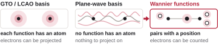
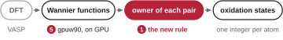
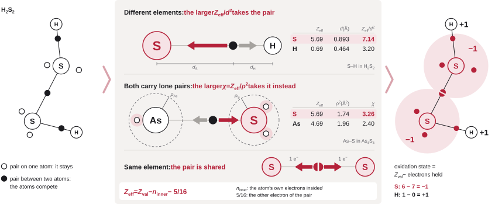
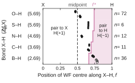
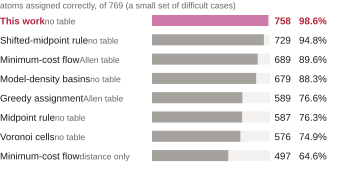
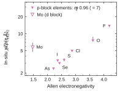
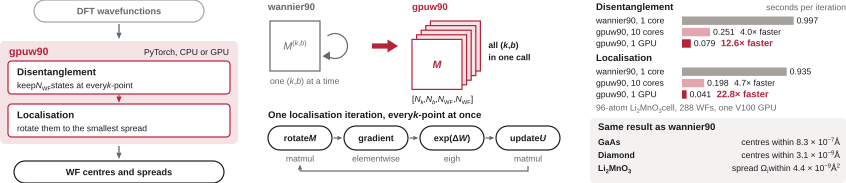

Why Wannier functions?
DFT does not output oxidation states. With atom-centred basis sets (GTO, LCAO), every electron can be projected onto an atom. Plane waves, the standard for solids, belong to no atom: there is nothing to project on. Wannier functions (WFs) turn plane-wave states back into localised electron pairs, and one question remains: which atom owns a bond pair? We let the calculation decide. Each atom’s pull on the pair comes from its own WFs. No electronegativity table, no fitted parameter.


1A parameter-free electron-assignment rule based on Wannier centres

2Solving the hydrogen problem

129 of 137 X–H pairs lie nearer H. The balance of the two pulls, f*, assigns all 153 H atoms correctly.
3Comparison of assignment algorithms

4Emergent electronegativity

5gpuw90: computing Wannier functions on a GPU
gpuw90 rewrites the two iterative steps of wannier90 in PyTorch. It reads the same input files and runs unchanged on a CPU or a GPU.
